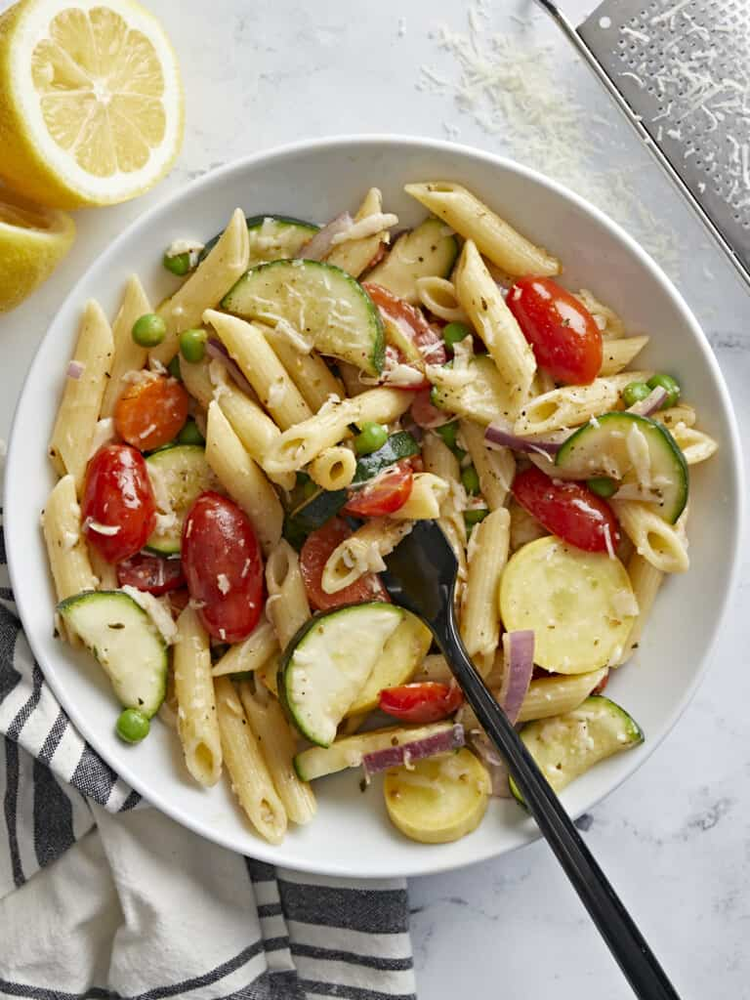

PASTA PRIMAVERA

how to make it?
Pasta Primavera is such a simple and fresh recipe,
you’ll only need a few ingredients to make this
impressive dish. Here are the ingredients you’ll
need to make Pasta Primavera:
ingredients
- Pasta
- fresh veggies
- Parmesan Cheese
- Salt, Pepper & Dried Oregano
- Extra Virgin Olive Oil & Butter
steps
- Start by prepping your vegetables. Wash the vegetables, then cut and slice each vegetable into equal size pieces. Cut the zucchini and yellow squash into half moons, slice the carrots into thin rounds, cut the grape tomatoes in half and slice the red onion into strips.
- Next bring a large pot of salted water to a boil. Cook the pasta according to the package instructions, or until al dente. Reserve some of the starchy pasta water before draining the pasta in a colander.
- While the pasta is boiling, saute the vegetables. In a large deep skillet add olive oil and saute carrots and onion over medium heat for 1-2 minutes. Next add zucchini and yellow squash and saute for an additional 1-2 minutes.
- Next add the minced garlic, grape tomatoes and frozen peas. Season the vegetables with salt, pepper and dried oregano. Saute for an additional 1-2 minutes, then turn the heat off.
- Add the butter to the skillet along with the fresh squeezed lemon juice and stir well to combine. Either add the cooked and drained pasta to the skillet, or transfer the pasta and vegetables to a large bowl. Add grated parmesan cheese and some of the reserved pasta water. Stir the vegetables with the pasta until well combined. Serve with fresh chopped parsley (optional garnish) and enjoy!